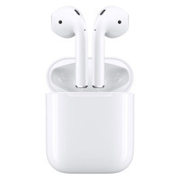

L'inform


Apple Airpods 2 Classique (2019)
Réf APPLE : AIRPODS-2019-NI
Ecouteurs Sans Fil - Bluetooth - Télécommande et micro intégrés - Autonomie 5 heures
Réf APPLE : AIRPODS-2019-NI
Ecouteurs Sans Fil - Bluetooth - Télécommande et micro intégrés - Autonomie 5 heures
Apple Airpods Classic 2019
APPLE
Garantie légale de conformité : 2 ans

Plus magiques que jamais.
Temps de conversation augmenté, activation vocale de Siri et nouveau boîtier de charge sans fil. Les nouveaux AirPods sont des écouteurs sans fil, et sans commune mesure. Retirez-les de leur boîtier et ils fonctionnent tout de suite avec tous vos appareils. Portez-les à vos oreilles et ils se connectent immédiatement pour vous faire profiter d’un son de haute qualité parfaitement détaillé. Plus que géniaux, ils sont magiques.
Sans fil et sans égal.
Après une configuration en un seul geste, vos AirPods s’activent automatiquement et restent toujours connectés. Pour les utiliser, c’est tout aussi simple. Les AirPods détectent quand vous les placez à l’oreille et mettent en pause ce que vous écoutez dès que vous les retirez. Et que vous connectiez vos AirPods à votre iPhone, votre Apple Watch, votre iPad ou votre Mac, l’expérience est toujours sensationnelle.
Demandez-le à Siri.
Il n’a jamais été aussi simple de vous adresser à votre assistant personnel préféré. Dites juste « Dis Siri » pour obtenir un coup de main, sans avoir à vous préoccuper de votre iPhone.

Des performances inouïes
Dotés de la nouvelle puce d’écouteurs H1 conçue par Apple, les AirPods bénéficient d’une connexion sans fil plus rapide et plus stable — jusqu’à 2x plus rapide quand vous passez d’un appareil actif à l’autre3 — et d’un temps de connexion 1,5x plus rapide pour les appels téléphoniques. La puce H1 permet aussi l’activation vocale de Siri et une réduction de 30 % du temps de latence pour les jeux vidéo. Alors, que vous jouiez, écoutiez de la musique ou suiviez un podcast, vous bénéficiez toujours d’une qualité de son optimale.
24 heures de liberté.
Les AirPods offrent 5 heures d’écoute, une performance unique sur le marché, et jusqu’à 3 heures de conversation, le tout à partir d’une même charge. Et ils peuvent vous accompagner partout, grâce à leur boîtier qui permet plusieurs recharges et livre plus de 24 heures d’autonomie. Besoin d’une recharge express ? Replacez les AirPods dans leur boîtier pendant 15 minutes et obtenez jusqu’à 3 heures d’écoute et 2 heures de conversation. Pour vérifier l’état de la batterie, approchez les AirPods de votre iPhone ou demandez à Siri « Quel est le niveau de batterie de mes AirPods ? ».
Configuration instantanée. Emballement immédiat.
Les AirPods se connectent tout de suite à votre iPhone ou Apple Watch, et le son bascule de manière fluide d’un appareil à l’autre. Vous voulez écouter le son de votre Mac ou votre iPad ? Sélectionnez les AirPods sur ces appareils. La configuration est facile, et les résultats? magiques.
APPLE
Garantie légale de conformité : 2 ans
Plus magiques que jamais.
Temps de conversation augmenté, activation vocale de Siri et nouveau boîtier de charge sans fil. Les nouveaux AirPods sont des écouteurs sans fil, et sans commune mesure. Retirez-les de leur boîtier et ils fonctionnent tout de suite avec tous vos appareils. Portez-les à vos oreilles et ils se connectent immédiatement pour vous faire profiter d’un son de haute qualité parfaitement détaillé. Plus que géniaux, ils sont magiques.
Sans fil et sans égal.
Après une configuration en un seul geste, vos AirPods s’activent automatiquement et restent toujours connectés. Pour les utiliser, c’est tout aussi simple. Les AirPods détectent quand vous les placez à l’oreille et mettent en pause ce que vous écoutez dès que vous les retirez. Et que vous connectiez vos AirPods à votre iPhone, votre Apple Watch, votre iPad ou votre Mac, l’expérience est toujours sensationnelle.
Demandez-le à Siri.
Il n’a jamais été aussi simple de vous adresser à votre assistant personnel préféré. Dites juste « Dis Siri » pour obtenir un coup de main, sans avoir à vous préoccuper de votre iPhone.
Des performances inouïes
Dotés de la nouvelle puce d’écouteurs H1 conçue par Apple, les AirPods bénéficient d’une connexion sans fil plus rapide et plus stable — jusqu’à 2x plus rapide quand vous passez d’un appareil actif à l’autre3 — et d’un temps de connexion 1,5x plus rapide pour les appels téléphoniques. La puce H1 permet aussi l’activation vocale de Siri et une réduction de 30 % du temps de latence pour les jeux vidéo. Alors, que vous jouiez, écoutiez de la musique ou suiviez un podcast, vous bénéficiez toujours d’une qualité de son optimale.
24 heures de liberté.
Les AirPods offrent 5 heures d’écoute, une performance unique sur le marché, et jusqu’à 3 heures de conversation, le tout à partir d’une même charge. Et ils peuvent vous accompagner partout, grâce à leur boîtier qui permet plusieurs recharges et livre plus de 24 heures d’autonomie. Besoin d’une recharge express ? Replacez les AirPods dans leur boîtier pendant 15 minutes et obtenez jusqu’à 3 heures d’écoute et 2 heures de conversation. Pour vérifier l’état de la batterie, approchez les AirPods de votre iPhone ou demandez à Siri « Quel est le niveau de batterie de mes AirPods ? ».
Configuration instantanée. Emballement immédiat.
Les AirPods se connectent tout de suite à votre iPhone ou Apple Watch, et le son bascule de manière fluide d’un appareil à l’autre. Vous voulez écouter le son de votre Mac ou votre iPad ? Sélectionnez les AirPods sur ces appareils. La configuration est facile, et les résultats? magiques.
| Type d'écouteurs | Ecouteurs Sans-Fil |
|---|---|
| Microphone intégré | Oui |
| Configuration du casque | Fermé |
| Connectivité | Bluetooth |
| Boîtier de charge | Connecteur Lightning |
| Capteurs |
Deux micros beamforming(à filtre spatial) Deux capteurs optiques Accéléromètre détecteur de mouvement Accéléromètre détecteur de voix |
| Autonomie avec boîtier de charge | Plus de 24 heures d'écoute, jusqu'à 18 heures de conversation |
| Autonomie avec une charge | Jusqu'à 5 heures d'écoute, jusqu'à 3 heures de conversation |
| Configuration requise |
Modèle d'iPhone, iPad et iPod touch exécutant iOS 12.2 ou version ultérieure Modèle d'Apple Watch exécutant WatchOS 5.2 ou version ultérieure Modèle de Mac exécutant masOS 10.14.4 ou version ultérieure |
| Dimensions |
Airpod: 16.5mmx18mmx40.6mm Boîtier de charge: 44.3x21.3x53.5mm |
| Poids |
Airpod: 4 grammes Boîtier de charge: 40 grammes |